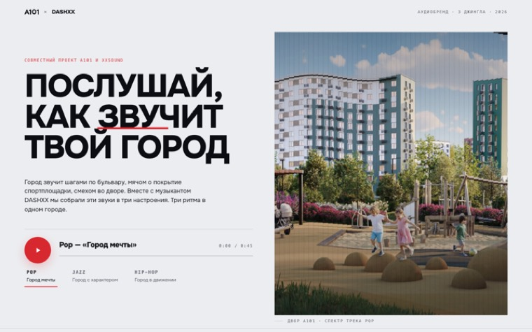
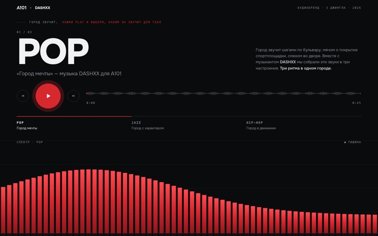
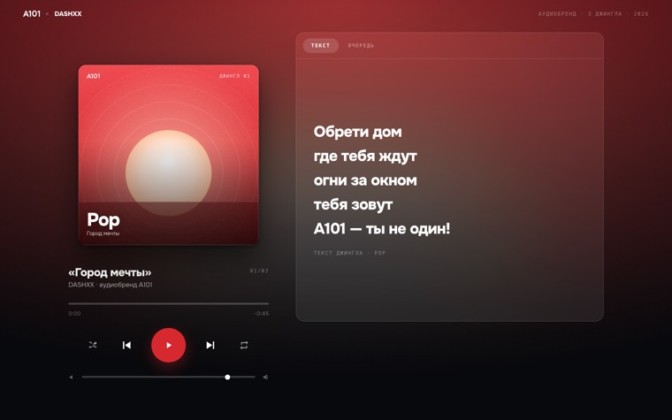
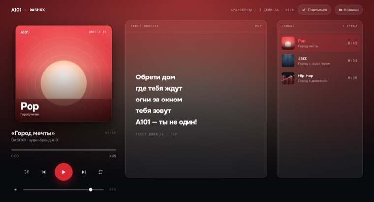
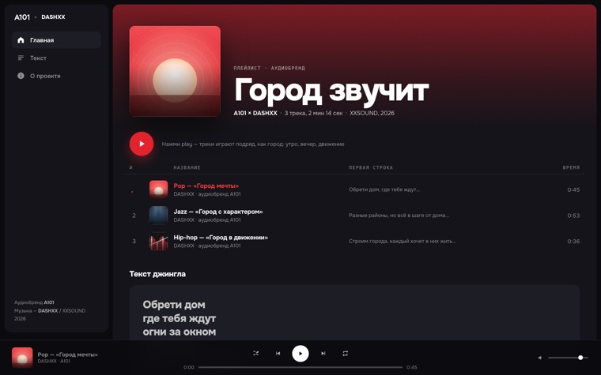
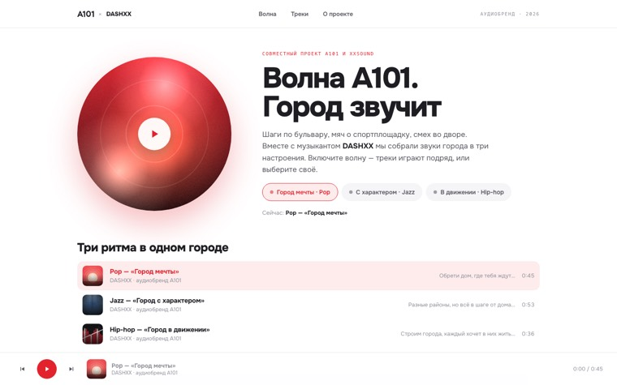
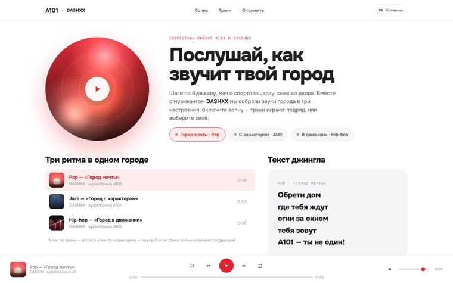

Семь вариантов лендинга спецпроекта. У всех одна основа: три джингла XXSOUND, тексты, дизайн-токены А101. Различается подача. Откройте каждую и включите звук.

V1Рендер-спектрСветлый редакционный разворот. Рендер района разрезан на 48 колонок, высота которых — живой спектр трека.Бумажная
V2ЭквалайзерПлеер и эквалайзер во всю ширину, без изображений. До play — форма волны трека, после — живой спектр.Студийная
V3Now PlayingЛогика Apple Music: живые обложки на canvas, текст и очередь, фон подсвечен цветом обложки.По мотивам Apple Music
V4Десктоп-плеерТри колонки: плеер, текст, очередь. Горячие клавиши, медиаклавиши ОС, нижняя панель.Десктопная
V5ПлейлистСайдбар, страница плейлиста, таблица треков, постоянный нижний плеер — в красном А101.По мотивам Spotify
V6Волна А101Живой пульсирующий шар, чипы настроений, светлая тема как на a101.ru. Волна не останавливается.По мотивам Яндекс Музыки
V7СинтезЛучшее из v4–v6: волна и светлая тема, постоянный плеер, текст рядом с треками, мобильная оптимизация.Рекомендуемая